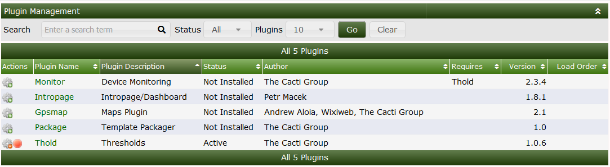
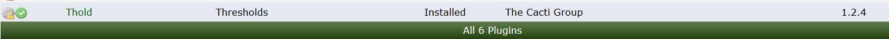
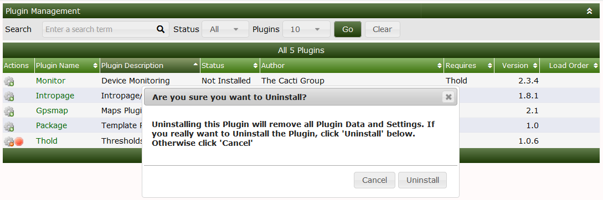
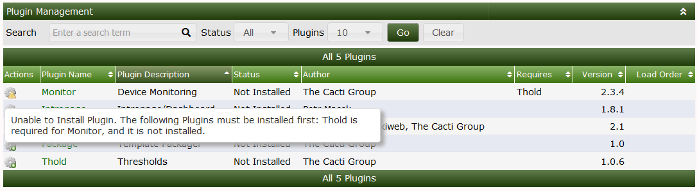

Installing plugins on cacti is a simple procedure
Download the plugin to cactidir/cacti/plugins
git clone https://github.com/Cacti/plugin_thold.git
mv plugin_thold /var/www/html/cacti/plugins
Now assign the proper permissions to the folder
chown -R apache:apache plugin_thold
From Console > Configuration > Plugins Install the plugin by Clicking on the wrench Icon as showng below.
Below you will now see the THOLD plugin available to install in this case we are installing thold
After installing the plugin by clicking on the grey gear you will now how to enable it this can be done via clicking on the green check mark

After this, the Plugin is installed and enabled. However, there will likely be onfiguration that must take place after the Plugin is enabled. See the Plugin documentation for instructions on how to configure and use them.
Updating a plugin not only keeps you up to date with the latest release of the code for that plugin. It also allows you to keep all of your settings for that plugin ensure you DO NOT UNINSTALL the plugin. You must instead disable the plugin which will not drop the SQL tables and thus save your settings.
Disable the Plugin you want to update
Backup the current Plugin folder typically in <path_cacti>/plugins/plugin_name
cp -R /var/www/html/cacti/plugin/thold /tmp
git pull or download the new version of the Plugin
git pull
Change name of Plugin folder i.e plugin_thold to thold
mv plugin_thold thold
Assign proper permissions usually either www-data for Ubuntu/debian or apache for CentOS/RHEL
chown -R apache:apache thold
Re-enable the Plugin in the Console
To uninstall a plugin go into the plugins page Console > Configuration > Plugins Click on the plugin to Disable the plugin.
Click on the red dot beside the plugin to uninstall the plugin a dialogue box will appear now click uninstall.

This will uninstall the plugin from cacti but will NOT remove the files from the server to do that you must manually remove the plugin until you remove the files the plugin will show to be available to be installed.
WARNING: Uninstalling a Cacti Plugin generally also removes any database tables that that Plugin created, which means your data! Before uninstalling Plugins, it would be wise to have a backup strategy in place in case you accidentally uninstall a Plugin and loose your data!
Some dependencies such as THOLD aka Thresholds rely on another plugin in this case thold reliese on the monitor plugin which is missing in this case you will see the below messege box in order to continue you must install the required plugin.

Copyright (c) 2004-2024 The Cacti Group